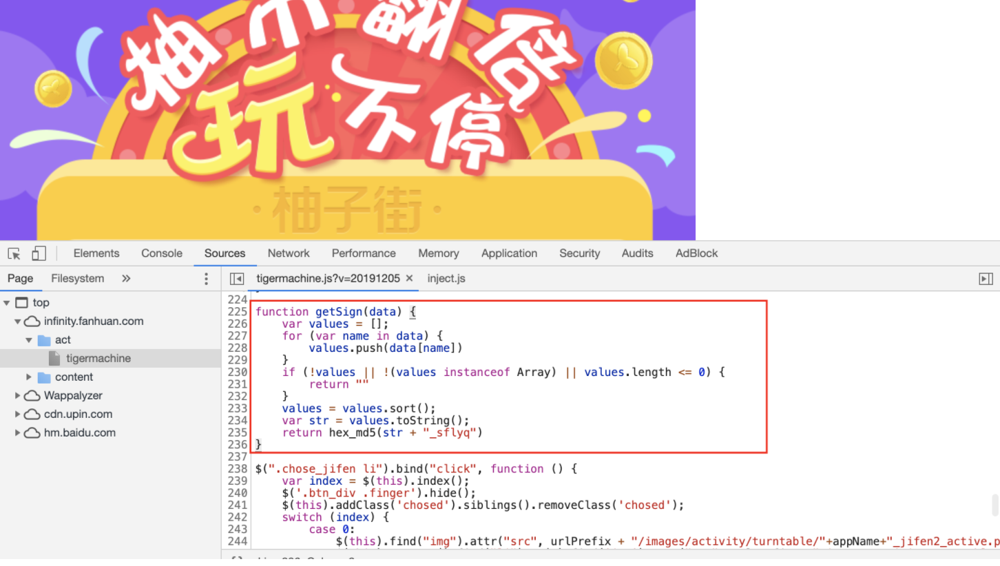

移动APP加解密思路总结
通用的思路 - 朴实无华且枯燥
- 摘取数据包加密的字段名、时间戳以及请求路由作为关键词在反编译代码中全局搜索
- 常用的加解密函数名全局搜索（AES、DES、RSA、Decrypt、Encrypt、encode、decode…）
加密位置
Java层加密
- Java层加解密函数大部分实现都在
javax.crypto.Cipher这个类里面，因此可以直接Hook这个类的init、dofinal、getInstance等方法并打印相关参数。 - native实现需要追踪到so文件实现逻辑
比较常见的情况是加解密的实现在Java层，但是具体的密钥存放在so文件中
密钥直接硬编码在java层中：
- 一般来说本身应用的加解密实现都在应用包名目录下，但也有不在的情况
- 回溯过程中发现部分函数没有正确反编译，可能是脱壳没有完全脱好
- 一些常用的编码、哈希函数确定是否被魔改
Native层加密
native层寻找加解密模块难度相对较大，毕竟C/C++看上去比较枯燥。大部分时候都是找到一些端倪再根据一些经验直接试着去解，要完全理清整个逻辑需要耗费比较多的时间。
大部分时候Android APP so文件也没办法去调试，当找到关键参数但是静态分析没办法获取值的时候，可以去调试对应的iOS App获取字段值。
参考样例：
- 需要掌握一些常见加密算法的原理、各个参数的意义；比如 AES 加密模式和padding。
- 常见加密算法的识别 iDA插件findcrypt
Javascript加密
APP 使用 Hybrid 开发模式，部分App实现逻辑实现在前端Javascript代码中。
确定加解密是否真的在js代码中，某次加解密的时候，因为本身App没有加固、也没有反调试，当时解密过程中先在java层定位到一些可疑的加解密函数，method profiling查看函数调用栈、Android Studio进行动态调试分析，最后也确定前面发现的可疑函数都没有调用，才确定加解密确实在js中。
如果本身APP是做了加固的情况下也可以先分析js代码，根据关键词是否能定位到加解密函数。
还有一种情况是，APP在js中定义了加解密接口，但是具体实现是放在了App客户端里面了。有一次在js中定位了一个关键的加密函数名encryptMsg以及desKey，但是无论如何都找不到函数的具体实现。后面意识到js中根本没有这个函数的实现，但根据js找到的函数名很快的可以在iOS二进制文件中找到对应的函数逻辑。
小tricks：
Hybrid APP中一般没有办法进行js调试，因此静态分析有时候难以回溯某个参数的来源和转变。
这里代师傅提供了一种思路：
给 JSContext 类添加方法来通过 js 调用 OC 方法来打印
1 | #import <JavaScriptCore/JavaScriptCore.h> |
接着在js中使用NSLog(e)的方式把参数回显出来
app中使用webview加载页面
请求包含加密字段，加密逻辑存放在页面的js文件中（前端加密），比如下面的老虎机抽奖

密钥存放
客户端存放密钥
常见的直接把 AES/DES key和IV直接写在代码中，也有遇到过把RSA公钥私钥写在资源文件里面，除了找到加解密后，有时候看到APP实现包名下自己实现了一个base64模块，在源码可以直接扣出来的前提下就直接也把这个base64模块拖出来了，避免这个base64进行什么个性化改动。
服务端返回密钥
客户端和服务端正式进行数据交互前先发起一个请求获取动态密钥来进行后续数据的加解密，但有时候 Android 和 iOS 加解密的密钥不一定都完全一样，遇到一次APP中时间戳也作为一个密钥，但是Android用的是13位的时间戳，而iOS用的是10位的时间戳（记得当时这里卡了好久），其实仔细看两个APP的请求包的差异就可以发现了，请求包的时间戳长度就是不一样的。
客户端+服务端获取密钥
现在部分App比较严谨，会把密钥加密返回到客户端，需要先做一层解密，解出来的内容作为后续数据包加解密的密钥。当时看请求包路由/Rechargeyj/Util/GetSuitDynamicKey就推测请求返回的就是一个服务端密钥。密钥传输加密大部分都用RSA。
有时候不一定都这么顺利能解密到返回的密钥，有时候就是没有把服务端返回密钥的返回包解出来，后面直接Hook相关函数把动态密钥整出来。但这里遇到一个情况是，Frida 脚本启动hook时候发出去的请求包都不能正常响应，但是后面没有深究什么原因，这里只需要拿到key就好了。
其他情况
数据包的连续性校验
每次登录成功后，获取cookie的某个字段、手机的deviceID作为3DES加密的密钥。然后获取上一个返回包的Service-Number作为第三个加密的密钥。因此每个请求包要求必须连续性，前一个请求包作为后一个请求包密钥的一部分，当在repeater重放的时候，因为没有获取上一个请求包的Service-Number因此签名字段S一直都是错误的
国密
国密的加解密，
特征：sm2、sm3、sm4
To be continue…